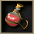
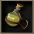

一般
HP恢復藥
| 圖示 | 名稱 | 價格 | Wei | 取得方式 |
 赫爾莉菈 赫爾莉菈 | 60 | 1 | NPC:各職業城鎮藥店 |
HP+50 [堆疊數:99]
| 赫爾莉洛 | 150 | 1 | NPC:各職業城鎮藥店、NPC:萊貝雅藥店 |
HP+100 [堆疊數:80]
| 赫爾莉克 | 500 | 1 | NPC:各職業城鎮藥店、NPC:萊貝雅藥店、NPC:交流廣場藥店 |
HP+200 [堆疊數:50]
 赫爾莉克夏 赫爾莉克夏 | 2,000 | 1 | NPC:伊卡魯斯藥店、NPC:卡雷瓦拉 史丹、NPC:萊貝雅藥店 |
HP+500 [堆疊數:20]
 舊赫爾莉菈 舊赫爾莉菈 | 60 | 1 | 任務報酬品 |
HP+30 [堆疊數:]
| 舊赫爾莉洛 | 100 | 1 | 任務獎勵品、 彩券、任務獎勵品 彩券、任務獎勵品 |
HP+40 [堆疊數:]
| 舊赫爾莉克 | 300 | 1 | ［羅德哥布林］卡門塔、 帽靈、科特摩、 帽靈、科特摩、 斯皮羅、德雷薩、奈特梅爾等各種怪物 斯皮羅、德雷薩、奈特梅爾等各種怪物 |
HP+80 [堆疊數:30]
 舊赫爾莉克夏 舊赫爾莉克夏 | 1,000 | 1 | ［血腥魔瓜］瓊奇、 史克林、史特帕尼、壹之鬼、九十五之鬼、九十三之鬼等各種怪物 史克林、史特帕尼、壹之鬼、九十五之鬼、九十三之鬼等各種怪物 |
HP+200 [堆疊數:]
| 圖示 | 名稱 | 價格 | Wei | 取得方式 |
| 赫爾莉菈U | 90 | 1 |  製藥 製藥 |
HP+30 [捆數:] 可對其他玩家使用
| 赫爾莉洛U | 150 | 1 | 製藥 |
HP+40 [捆數:] 可對其他玩家使用
| 赫爾莉克U | 450 | 1 | 製藥 |
HP+80 [捆數:] 可對其他玩家使用
 赫爾莉菈T 赫爾莉菈T | 90 | 0 | 製藥 |
HP+50 [堆疊數:]
| 赫爾莉克夏T | - | 0 | 限期活動 |
HP+500 [捆數:]
| 赫爾莉菈G40 | 500 | 1 | 製藥 |
HP+40% [堆疊數:50]
| 高級小型赫爾莉洛 | 500 | 0 | NPC:盧亞斯城商人 |
HP+50 [堆疊數:]
 高級中型赫爾莉菈 | 1,000 | 1 | NPC:盧亞斯城商人 |
HP+100 [堆疊數:]
| 高級大型赫爾莉克夏 | 3,000 | 1 | NPC:盧亞斯城商人 |
HP+300 [堆疊數:]
| 赫爾莉洛(特價) | 80 | 1 | 舊版本道具 |
HP+40 [堆疊數:]
| 赫爾莉克(特價) | 240 | 1 | 舊版本道具 |
HP+80 [堆疊數:]
| 赫爾莉洛(盧亞斯產) | 50 | 1 | 舊版本道具 |
HP+40 [堆疊數:]
| 赫爾莉克(盧亞斯產) | 150 | 1 | 舊版本道具 |
HP+80 [堆疊數:]
| 赫爾莉克夏(盧亞斯產) | 500 | 1 | 舊版本道具 |
HP+200 [堆疊數:]
| 圖示 | 名稱 | 價格 | Wei | 取得方式 |
MP恢復藥
| 圖示 | 名稱 | 價格 | Wei | 取得方式 |
 瑪娜莉菈 瑪娜莉菈 | 120 | 1 | NPC:各職業城鎮藥店 |
MP+50 [堆疊數:99]
| 瑪娜莉洛 | 300 | 1 | NPC:各職業城鎮藥店、NPC:萊貝雅藥店 |
MP+100 [堆疊數:80]
| 瑪娜莉克 | 1,000 | 1 | NPC:各職業城鎮藥店、NPC:萊貝雅藥店、NPC:交流廣場藥店 |
MP+200 [堆疊數:50]
 瑪娜莉克夏 瑪娜莉克夏 | 4,000 | 1 | NPC:伊卡魯斯藥店、NPC:卡雷瓦拉 史丹、NPC:萊貝雅藥店 |
MP+500 [堆疊數:20]
 舊瑪娜莉菈 舊瑪娜莉菈 | 120 | 1 | 任務報酬品 |
MP+30 [堆疊數:]
| 舊瑪娜莉洛 | 200 | 1 | 任務獎勵品、彩券、任務獎勵品 |
MP+40 [堆疊數:]
| 舊瑪娜莉克 | 600 | 1 |
MP+100 [堆疊數:30]
 舊瑪娜莉克夏 舊瑪娜莉克夏 | 2,000 | 1 |
MP+200 [堆疊數:]
| 圖示 | 名稱 | 價格 | Wei | 取得方式 |
| 瑪娜莉菈U | 180 | 1 | 製藥 |
MP+30 [捆數:] 可對其他玩家使用
| 瑪娜莉洛U | 1 | 取得方式 |
MP+40 [捆數:] 可對其他玩家使用
| 瑪娜莉克U | 900 | 1 | 取得方式 |
MP+80 [捆數:] 可對其他玩家使用
 瑪娜莉菈T 瑪娜莉菈T | 180 | 0 | 製藥 |
MP+50 [堆疊數:]
| 瑪娜莉克夏T | - | 0 | 限期活動 |
MP+500 [捆數:]
| 瑪娜莉菈G40 | 1,000 | 1 | 製藥 |
MP+40% [堆疊數:50]
| 高級小型瑪娜莉洛 | 390 | 0 | NPC:盧亞斯城商人 |
MP+50 [堆疊數:]
| 高級中型瑪娜莉克 | 910 | 1 | NPC:盧亞斯城商人 |
MP+100 [堆疊數:]
| 高級大型瑪娜莉克夏 | 3,900 | 1 | NPC:盧亞斯城商人 |
MP+300 [堆疊數:]
| 瑪娜莉洛(特價) | 160 | 1 | 舊版本道具 |
MP+40 [堆疊數:]
| 瑪娜莉克(特價) | 480 | 1 | 舊版本道具 |
MP+80 [堆疊數:]
| 瑪娜莉洛(斯歐米產) | 100 | 1 | 舊版本道具 |
MP+40 [堆疊數:]
| 瑪娜莉克(斯歐米產) | 300 | 1 | 舊版本道具 |
MP+80 [堆疊數:]
| 瑪娜莉克夏(斯歐米產) | 1,000 | 1 | 舊版本道具 |
MP+200 [堆疊數:]
| 圖示 | 名稱 | 價格 | Wei | 取得方式 |
SP恢復藥
| 圖示 | 名稱 | 價格 | Wei | 取得方式 |
 史黛莉菈 史黛莉菈 | 120 | 1 | NPC:各職業城鎮藥店 |
SP+50 [堆疊數:99]
| 史黛莉洛 | 300 | 1 | NPC:各職業城鎮藥店、NPC:萊貝雅藥店 |
SP+100 [堆疊數:80]
| 史黛莉克 | 1,000 | 1 | NPC:各職業城鎮藥店、NPC:萊貝雅藥店、NPC:交流廣場藥店 |
SP+200 [堆疊數:50]
 史黛莉克夏 史黛莉克夏 | 4,000 | 1 | NPC:伊卡魯斯藥店、NPC:卡雷瓦拉 史丹、NPC:萊貝雅藥店 |
SP+500 [堆疊數:20]
 舊史黛莉菈 | 120 | 1 | 任務報酬品 |
SP+30 [堆疊數:]
 舊史黛莉洛 舊史黛莉洛 | 200 | 1 | 任務獎勵品、彩券、任務獎勵品 |
SP+40 [堆疊數:]
| 舊史黛莉克 | 600 | 1 |
SP+100 [堆疊數:30]
 舊史黛莉克夏 舊史黛莉克夏 | 2,000 | 1 |
SP+200 [堆疊數:]
| 圖示 | 名稱 | 價格 | Wei | 取得方式 |
| 史黛莉菈U | 180 | 1 | 製藥 |
SP+30 [捆數:] 可對其他玩家使用
| 史黛莉洛U | 1 | 取得方式 |
SP+40 [捆數:] 可對其他玩家使用
| 史黛莉克U | 900 | 1 | 取得方式 |
SP+80 [捆數:] 可對其他玩家使用
 史黛莉菈T 史黛莉菈T | 180 | 0 | 製藥 |
SP+50 [堆疊數:]
| 史黛莉克夏T | - | 0 | 限期活動 |
SP+500 [捆數:]
| 史黛莉菈G40 | 1,000 | 1 | 製藥 |
SP+40% [堆疊數:50]
| 高級小型史黛莉洛 | 390 | 0 | NPC:盧亞斯城商人 |
SP+50 [堆疊數:]
| 高級中型史黛莉克 | 910 | 1 | NPC:盧亞斯城商人 |
SP+100 [堆疊數:]
| 高級大型史黛莉克夏 | 3,900 | 1 | NPC:盧亞斯城商人 |
SP+300 [堆疊數:]
| 史黛莉洛(特價) | 160 | 1 | 舊版本道具 |
SP+40 [堆疊數:]
| 史黛莉克(特價) | 480 | 1 | 舊版本道具 |
SP+80 [堆疊數:]
| 史黛莉洛(米魯里斯產) | 100 | 1 | 舊版本道具 |
SP+40 [堆疊數:]
| 史黛莉克(米魯里斯產) | 300 | 1 | 舊版本道具 |
MP+80 [堆疊數:]
| 史黛莉克夏(米魯里斯產) | 1,000 | 1 | 舊版本道具 |
SP+200 [堆疊數:]
| 圖示 | 名稱 | 價格 | Wei | 取得方式 |
異常狀態恢復藥
| 圖示 | 名稱 | 價格 | Wei | 取得方式 |
 視力回復藥 視力回復藥 | 100 | 1 | 卡雷瓦拉：藥店、製藥 |
解除自己的黑暗系異常狀態 [堆疊數:10]
| 精神安定劑 | 100 | 1 | 卡雷瓦拉：藥店、製藥 |
解除自己的混亂系異常狀態 [堆疊數:10]
 解毒劑 解毒劑 | 100 | 1 | 卡雷瓦拉：藥店、製藥 |
解除自己的中毒系異常狀態 [堆疊數:10]
| 解毒劑 | 100 | 1 | 卡雷瓦拉：藥店、製藥 |
解除自己的麻痺、遲緩系異常狀態 [堆疊數:10]
| 黑暗解除藥水 | 100 | 1 | NPC:各職業城鎮藥店、卡雷瓦拉：藥店 |
解除對象的黑暗系異常狀態 [堆疊數:10]
| 混亂解除藥水 | 100 | 1 | NPC:各職業城鎮藥店、卡雷瓦拉：藥店 |
解除對象的混亂系異常狀態 [堆疊數:10]
| 中毒治療藥水 | 100 | 1 | NPC:各職業城鎮藥店、卡雷瓦拉：藥店 |
解除對象的中毒系異常狀態 [堆疊數:10]
| 停止解除藥水 | 100 | 1 | NPC:各職業城鎮藥店、卡雷瓦拉：藥店 |
解除對象的無法移動異常狀態 [堆疊數:10]
| 沈默解除藥水 | 100 | 1 | - |
解除對象的無法使用魔法異常狀態 [堆疊數:10]
| 圖示 | 名稱 | 價格 | Wei | 取得方式 |
食物
| 圖示 | 名稱 | 價格 | Wei | 取得方式 |
 培根 培根 | 348 | 2 | 魔界村：肉店 |
恢復最大HP的10％ [堆疊數:30]
 肉 肉 | 698 | 2 | 魔界村：肉店 |
恢復最大HP的20％ [堆疊數:30]
| 新鮮的肉 | 1048 | 2 | 魔界村：肉店 |
恢復最大HP的30％ [堆疊數:30]
| 迪斯腿肉 | 1398 | 2 |
恢復最大HP的25％ [捆數:]
| 哥布林肉 | 1748 | 2 | 魔界村：肉店 |
恢復最大HP的50％ [堆疊數:30]
 哥布林頸肉 哥布林頸肉 | 2098 | 2 | 博爾格、弗洛格加農炮 |
恢復最大HP的40％ [捆數:]
| 諾肯肉 | 3498 | 2 | 惡魔島商店、彩券、 諾肯、卡內爾、伊亞拉[朵洛蕾]拉娜[拉娜] 諾肯、卡內爾、伊亞拉[朵洛蕾]拉娜[拉娜] |
恢復最大HP的70％ [堆疊數:30]製藥材料
| 圖示 | 名稱 | 價格 | Wei | 取得方式 |
 茄子 茄子 | 698 | 2 | 魔界村：水果店、 寶箱（淺茶） 寶箱（淺茶） |
恢復最大MP的10％ [堆疊數:30]
 未熟的水果 未熟的水果 | 1398 | 2 | 魔界村：水果店 |
恢復最大MP的20％ [堆疊數:30]
| 水果 | 2098 | 2 | 魔界村：水果店 |
恢復最大MP的30％ [堆疊數:30]
 蘋果 蘋果 | 2798 | 2 | 魔界村：水果店 |
恢復最大MP的40％ [堆疊數:30]製藥材料
 酸蘋果 酸蘋果 | 3498 | 2 | 惡魔島商店、希耶拉[希耶拉]、帕梅拉[帕梅拉]、寶箱（淺茶） |
恢復最大MP的50％ [堆疊數:30]製藥材料